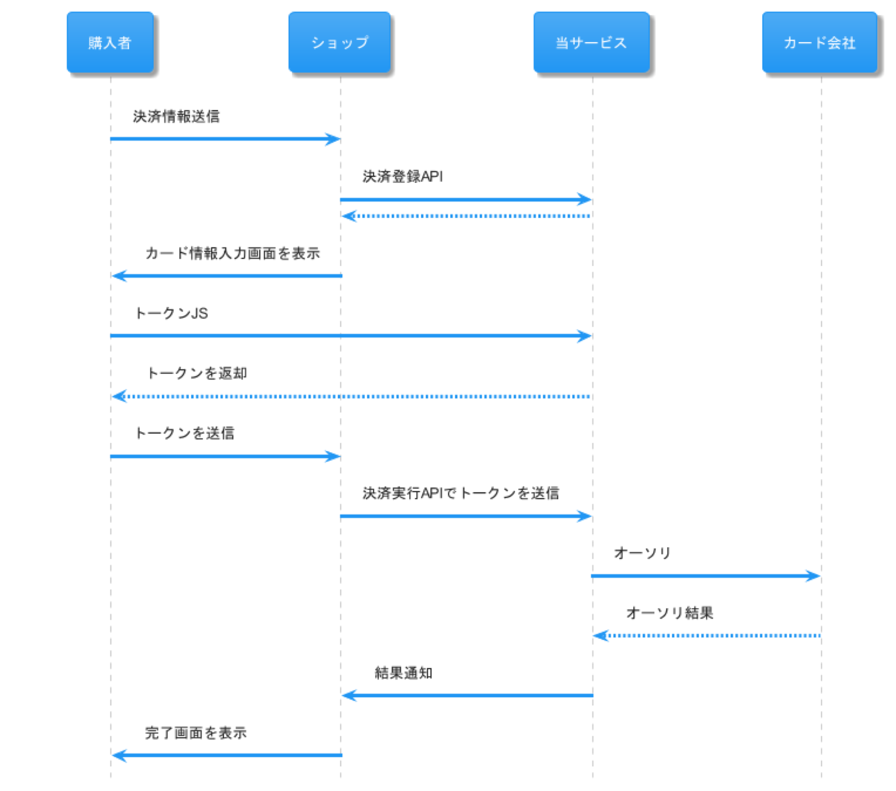
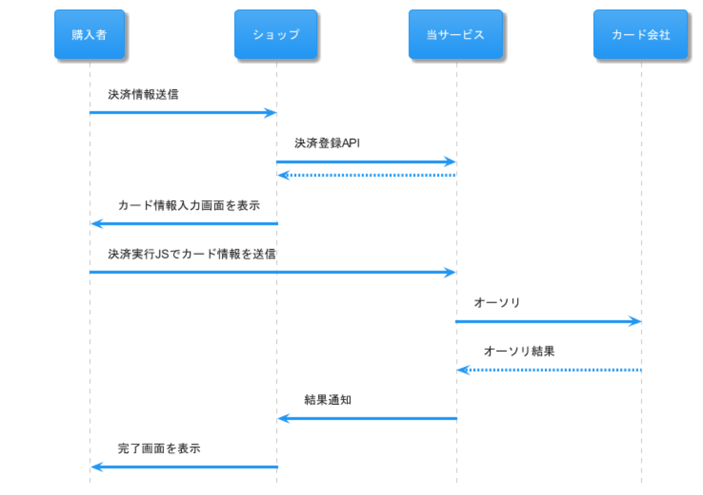
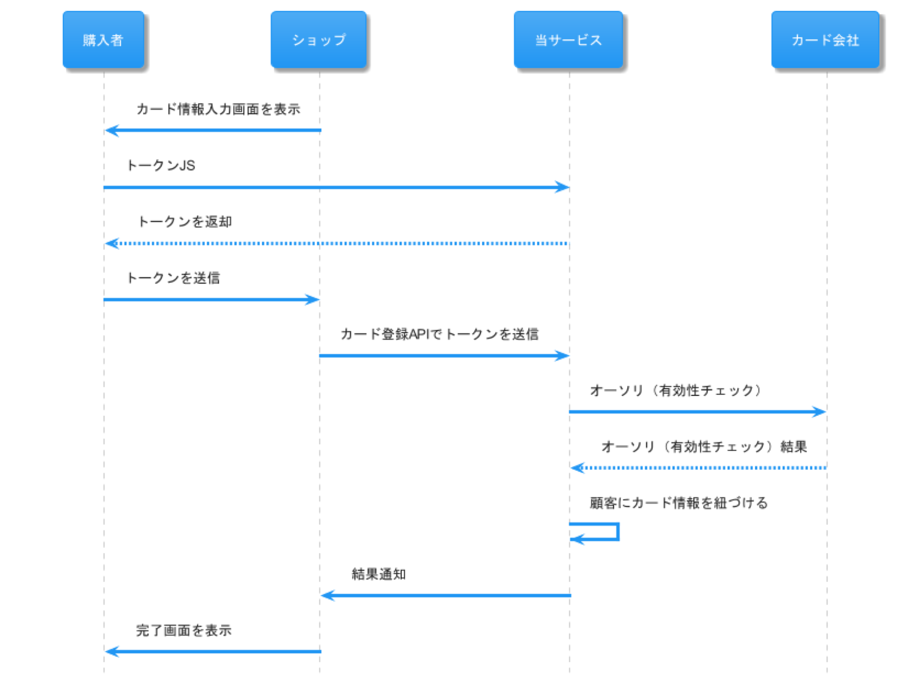
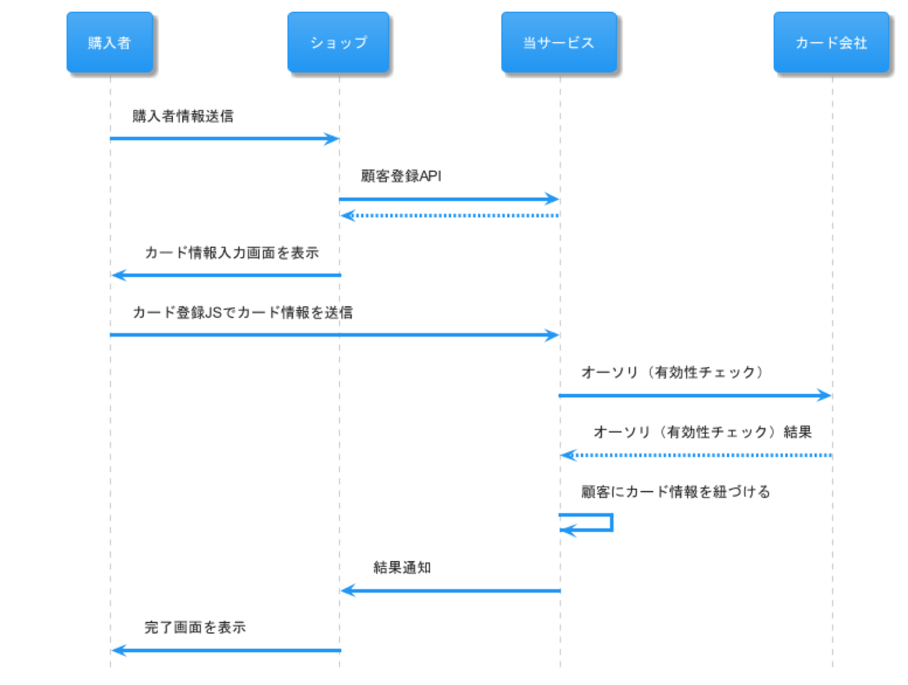
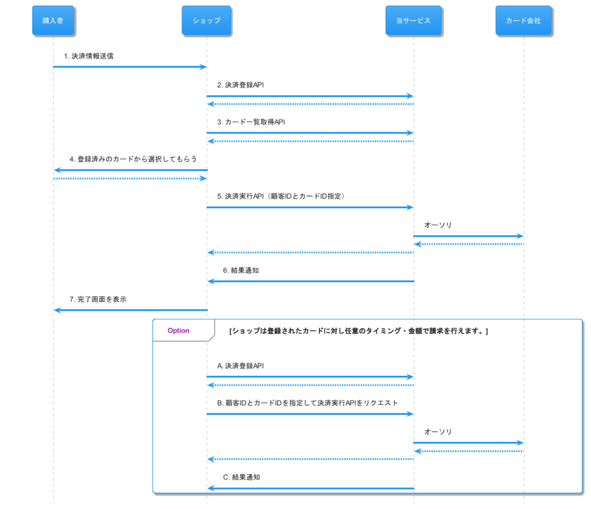

执行支付处理
本页介绍卡片信息的处理方式，以实现店铺不保存、也不经手卡片信息。
如果要构建由购买者每次输入卡片信息来完成支付的机制，或者要将卡片信息登记到 fincode 的客户信息中，请注意以下事项。
由购买者每次输入卡片信息时
由购买者每次输入卡片信息来完成支付时，请将卡号令牌化，或使用支付执行 JS。
使用令牌
将购买者输入的卡号替换为其他字符串（令牌）后进行通信。
请构建由客户端调用 fincode 的令牌化 API，并使用获取到的令牌执行支付 API 的网站。

- 购买者选择卡片支付作为支付方式。
- 店铺调用 fincode 的支付登记。
- 店铺调用 fincode 的令牌 JS。
- 店铺调用 fincode 的支付执行。
- fincode 向信用卡公司执行授权处理。
使用支付执行 JS
使用支付执行 JS，可以将卡片信息直接发送给 fincode 并完成支付。

- 购买者选择卡片支付作为支付方式。
- 店铺调用 fincode 的支付登记。
- 店铺调用 fincode 的支付执行 JS。
- fincode 向信用卡公司执行授权处理。
为客户登记卡片信息时
将卡片信息登记到 fincode 的客户信息后，无需使用卡片信息，即可通过客户 ID 完成支付。
但在登记卡片信息时，与每次输入卡片信息完成支付的情况一样，请对卡号进行令牌化，或使用卡片登记 JS。
每条 fincode 客户信息最多可以登记 5 条卡片信息（Card 以及 Payment Method）。已有 5 条记录时，如需登记其他卡片，请先删除已有的卡片信息再进行登记。
使用令牌
将购买者输入的卡号替换为其他字符串（令牌）后进行通信。
请构建由客户端调用 fincode 的令牌化 API，并使用获取到的令牌执行卡片登记 API 的网站。

- 购买者选择卡片支付作为支付方式。
- 店铺调用 fincode 的令牌 JS。
- 店铺调用 fincode 的卡片登记。
- fincode 向信用卡公司执行有效性检查。
使用卡片登记 JS
使用卡片登记 JS，可以将卡片信息直接发送给 fincode，并将卡片信息登记到客户信息中。

- 购买者选择卡片支付作为支付方式。
- 店铺调用 fincode 的卡片登记 JS。
- fincode 向信用卡公司执行有效性检查。
指定已登记的卡片执行支付时
可以使用通过令牌或卡片登记 JS 预先为客户登记的卡片信息完成支付，无需每次都让购买者输入卡片信息。

- 购买者选择卡片支付作为支付方式。
- 店铺调用 fincode 的支付登记。
- 店铺让购买者选择卡片。
- 指定所选卡片的 ID，并向店铺服务器请求执行支付。
- 店铺指定卡片 ID 和客户 ID，调用支付执行。
- fincode 尝试使用指定卡片进行授权，并返回结果。
- 店铺向购买者显示支付完成页面。
此外，也可以在任意时间，以任意金额对已登记的卡片执行支付。
利用此功能，例如可以使用购买者已登记的卡片信息定期收费。
A. 店铺调用 fincode 的支付登记。
B. 店铺指定卡片 ID 和客户 ID，调用支付执行。
C. fincode 尝试使用指定卡片进行授权，并返回结果。